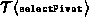
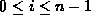
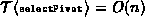

Data Structures and Algorithms
with Object-Oriented Design Patterns in Java
Data Structures and Algorithms
with Object-Oriented Design Patterns in Java
The running time of the recursive sort method
(Program  )
is given by
)
is given by
where n is the number of elements in sequence to be sorted,  is the running time of the selectPivot method, and i is the number of elements which end up to the left of the pivot, .
The running time of sort is affected by the selectPivot
method in two ways:
First, the value of the pivot chosen affects the sizes of the subsequences.
That is, the pivot determines the value i in Equation .
Second, the running time of the selectPivot method itself,
,
must be taken into account.
Fortunately, if ,
we can ignore its running time because there is already an O(n) term
in the expression.
In order to solve Equation ,
we assume that
and then drop the  s from the recurrence to get
s from the recurrence to get
Clearly the solution depends on the value of i.
 Copyright © 1998 by Bruno R. Preiss, P.Eng. All rights reserved.
Copyright © 1998 by Bruno R. Preiss, P.Eng. All rights reserved.